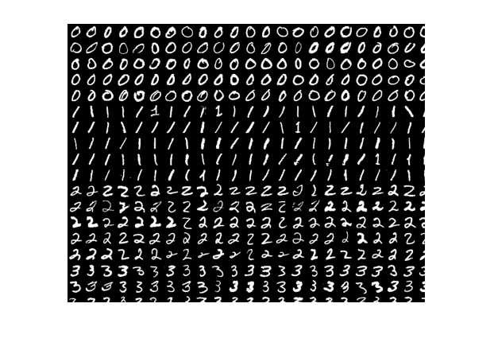
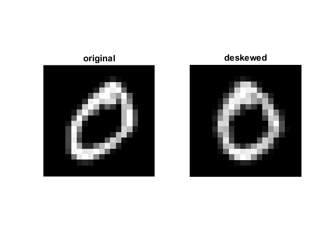
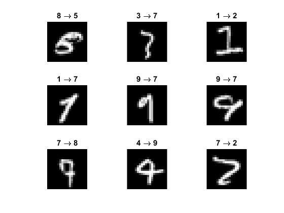

Contents
OCR of hand-written digits using HoG and SVM
In this tutorial, we will build an SVM classifer to recognize hand-written digits (0 to 9), using Histogram of Oriented Gradients (HOG) as feature vectors.
For additional resources, see this HoG video lecture.
Sources:
function svm_hog_ocr_digits_demo()Data
Load MNIST handwritten digits (5000 images) (params in this demo are hardcoded assuming 20x20 images)
[imgs, labels, img] = load_mnist_digits();
assert(numel(imgs)==5000 && isequal(size(imgs{1}),[20 20]));Show a portion of the big image
imshow(img(1:350,1:450))
%imtool(img)Show a sample of an image before and after deskew is applied
figure
subplot(121), imshow(imgs{1}), title('original')
subplot(122), imshow(deskew(imgs{1})), title('deskewed')HoG
choose an HoG implementation to use: OpenCV, MATLAB, or a simple custom one
HOG_ALG = 'opencv'; HOG_ALG = validatestring(HOG_ALG, {'custom', 'matlab', 'opencv'});
HoG features are stored in a matrix, one row per image
switch HOG_ALG case 'custom' nbins = 16; % number of bins to quantize gradient angles nfeats = 4 * nbins; % feature length case 'matlab' opts = {'CellSize',[10 10], 'BlockSize',[2 2], ... 'NumBins',9, 'UseSignedOrientation',true}; nfeats = numel(extractHOGFeatures(imgs{1}, opts{:})); case 'opencv' % create HOG object opts = {'WinSize',[20 20], 'BlockSize',[10 10], ... 'BlockStride',[5 5], 'CellSize',[10 10], ... 'NBins',9, 'SignedGradient',true}; %opts = [opts, 'GammaCorrection',false]; hog = cv.HOGDescriptor(opts{:}); nfeats = numel(hog.compute(imgs{1})); display(hog) end descs = zeros(numel(imgs), nfeats, 'single');
hog =
HOGDescriptor with properties:
id: 4
WinSize: [20 20]
BlockSize: [10 10]
BlockStride: [5 5]
CellSize: [10 10]
NBins: 9
DerivAperture: 1
WinSigma: -1
HistogramNormType: 'L2Hys'
L2HysThreshold: 0.2000
GammaCorrection: 0
NLevels: 64
SignedGradient: 1
SvmDetector: [1×0 single]
Process images and compute HOG descriptors for each
tic
disp('Extracting...')
for i=1:numel(imgs)
% deskew image
img = deskew(imgs{i});
%img = cv.threshold(img, 'Otsu');
% compute HOG descriptors flattened as a vector
switch HOG_ALG
case 'custom'
descs(i,:) = my_hog(img, nbins);
case 'matlab'
descs(i,:) = extractHOGFeatures(img, opts{:});
case 'opencv'
d = hog.compute(img).'; % returns a matrix, one row per window
descs(i,:) = d(:);
end
end
tocExtracting... Elapsed time is 3.625383 seconds.
Classification
Create multi-class linear SVM classifier
svm = cv.SVM();
svm.Type = 'C_SVC';
svm.KernelType = 'Linear';
svm.C = 0.5; % or do a trainAuto grid search to find optimal C
display(svm)svm =
SVM with properties:
id: 6
Type: 'C_SVC'
KernelType: 'Linear'
Degree: 0
Gamma: 1
Coef0: 0
C: 0.5000
Nu: 0
P: 0
ClassWeights: []
TermCriteria: [1×1 struct]
split data samples and corresponding labels
labels = int32(labels(:));
N = 2500; % fix(numel(labels)/2)
whos descs labels
if ~mexopencv.isOctave() && mexopencv.require('stats')
% train/test split
tabulate(labels(1:N))
tabulate(labels(N+1:end))
end Name Size Bytes Class Attributes
descs 5000x81 1620000 single
labels 5000x1 20000 int32
Value Count Percent
0 250 10.00%
1 250 10.00%
2 250 10.00%
3 250 10.00%
4 250 10.00%
5 250 10.00%
6 250 10.00%
7 250 10.00%
8 250 10.00%
9 250 10.00%
Value Count Percent
0 250 10.00%
1 250 10.00%
2 250 10.00%
3 250 10.00%
4 250 10.00%
5 250 10.00%
6 250 10.00%
7 250 10.00%
8 250 10.00%
9 250 10.00%
use half as training data
tic
disp('Training...')
svm.train(descs(1:N,:), labels(1:N));
tocTraining... Elapsed time is 0.088898 seconds.
the other half for testing
tic
disp('Testing...')
yhat = svm.predict(descs(N+1:end,:));
toc
%TODO: https://savannah.gnu.org/bugs/?50716Testing... Elapsed time is 0.006316 seconds.
performance on test set
acc = nnz(yhat == labels(N+1:end));
confmat = accumarray([labels(N+1:end), yhat]+1, 1);
display(confmat)
fprintf('Accuracy = %f%%\n', (acc/N)*100);confmat =
249 0 0 0 0 0 1 0 0 0
0 246 1 1 0 0 0 2 0 0
0 1 236 8 1 0 0 4 0 0
0 0 0 242 0 0 0 5 2 1
0 0 0 0 245 0 0 0 0 5
0 0 0 0 0 249 0 0 1 0
0 0 1 0 0 0 249 0 0 0
0 1 5 1 0 0 0 239 2 2
0 1 1 1 0 2 2 0 241 2
0 1 0 0 0 1 0 8 0 240
Accuracy = 97.440000%
Show some of the wrong predictions
idx = (yhat ~= labels(N+1:end));
fprintf('Number of wrong predictions = %d / %d\n', nnz(idx), N);
figure
idx = find(idx, 3*3, 'first');
for i=1:numel(idx)
ii = idx(i);
subplot(3,3,i), imshow(imgs{ii+N})
title(sprintf('%d \\rightarrow %d', labels(ii+N), yhat(ii)))
endNumber of wrong predictions = 64 / 2500
endHelper functions
function [imgs, labels, img] = load_mnist_digits() % Load MNIST handwritten digits, one big image fname = fullfile(mexopencv.root(), 'test', 'digits.png'); if exist(fname, 'file') ~= 2 disp('Downloading image...') url = 'https://cdn.rawgit.com/opencv/opencv/3.2.0/samples/data/digits.png'; urlwrite(url, fname); end img = cv.imread(fname, 'Grayscale',true); % split it into 5000 small images (500 from each 0:9 digits), % each image is 20x20 pixels [h,w] = size(img); imgs = mat2cell(img, ones(1,50)*h/50, ones(1,100)*w/100); imgs = reshape(imgs', 500, [])'; % cell array of size 10x500 labels = repmat((0:9)', 1, 500); % each row is one digit end function img = deskew(img) % deskew image using its second order moments sz = 20; m = cv.moments(img); if abs(m.mu02) > 0.2 % 0.01 skew = m.mu11 / m.mu02; M = [1 skew -0.5*sz*skew; 0 1 0]; img = cv.warpAffine(img, M, 'DSize',[sz sz], 'WarpInverse',true); end end function histo = my_hog(img, nbins) % this is a simplified implementation of HoG descriptors % (fixed 10x10 cells, 1 block, no overlapping, no block normalization) % number of orientation histogram bins if nargin < 2, nbins = 16; end % compute image gradient (its magnitude and direction) gx = cv.Sobel(img, 'DDepth','single', 'XOrder',1, 'YOrder',0); gy = cv.Sobel(img, 'DDepth','single', 'XOrder',0, 'YOrder',1); mag = hypot(gx, gy); ang = atan2(gy, gx) + pi; % directions in [0,2*pi] (signed gradient) % quantize directions into 16 bins bins = fix((nbins-1) * ang/(2*pi)) + 1; % bin indices in [1,16] inclusive % divide 20x20 image into 4 10x10 cells, and in each, % accumulate gradient magnitudes inside each direction bin % (binned orientations each weighted by its magnitude contribution) bb = mat2cell(bins, [10 10], [10 10]); mm = mat2cell(mag, [10 10], [10 10]); histo = cell(size(bb)); for i=1:numel(bb) H = accumarray(bb{i}(:), mm{i}(:), [nbins 1]); if false && any(H) % transform histogram to space with Hellinger metric H = sqrt(H ./ sum(H)); H = H ./ norm(H); end histo{i} = H; end % stack features from cells into one tall vector of length 4*16 histo = cat(1, histo{:}); end